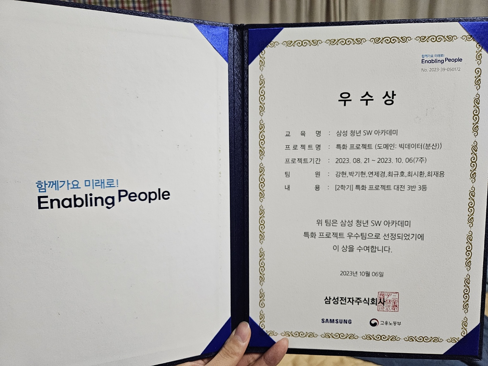

주요 구현사항
{kind=link}
사연&테마 입력
유저의 사연과 듣고 싶은 음악의 테마 그리고 DJ의 목소리를 선택하여 온캐스트 생성을 합니다.
{kind=link}
온캐스트 중 라디오
입력한 사연을 감정 분석을 한 데이터 바탕으로 gpt가 대본을 생성해줍니다. 온캐스트(생성된 대본+추천된 음악)는 총 7개로 구성되어, 라디오->음악이 3번 반복되고 마지막 라디오가 나오면서 온캐스트 종료
{kind=link}
온캐스트 중 음악
입력한 사연의 감정 분석 결과와 테마를 분석하여 노래를 추천해줍니다.
{kind=link}
마이페이지-온캐스트 보관함
생성된 온캐스트를 저장하여 다시 재생이 가능하고 라이브 페이지로 공유가 가능합니다.
{kind=link}
마이페이지-음악 보관함
원하는 플레이리스트들을 만들어 들을 수 있고, 추천 받은 음악들을 바로 플레이리스트를 만들어 추가해서 재생할 수 있습니다.
{kind=link}
음악 플레이어
음악 보관함에 플레이어에 들어가면 원하는 노래를 들을 수 있습니다.

라이브 페이지 라디오
유저들이 공유한 온캐스트들을 라이브로 다 함께 볼 수 있습니다.

라이브 페이지 음악
라이브 페이지에 유저들이 공유한 온캐스트들의 음악들을 실시간으로 감상할 수 있습니다.

라이브 페이지 음악
라이브 페이지 안에 있는 유저들끼리 실시간 소통이 가능합니다.
담당역할
React.js를 활용한 웹 페이지 구현
- 서버에서 주는 온캐스트 데이터들을 온캐스트 페이지에서 axios통신으로 받아 라디오를 재생하는 컴포넌트, 음악을 재생해주는 컴포넌트를 나눠 다른 페이지에서도 유지보수하기 쉬운 구성을 하여 페이지들을 구현
- 플레이어 페이지(온캐스트 플레이어, 라이브 플레이어), 마이페이지들의 틀을 구성하여 구현
WebSocket을 사용한 라이브 페이지
- 라이브 큐에 있는 온캐스트들의 데이터들을 서버와 실시간으로 통신하며 바로 바로 재생시켜줍니다.
- 1초 단위로 서버에서 받아오면서 라이브 페이지 안의 유저들 간의 영상 속도 차이가 최대한 나지 않도록 해줌
- 라이브 페이지 안에 있는 유저들끼리 소통이 가능하도록 채팅창 구현
성과&회고
프로젝트 성과
- 창의성과 기술적 완성도를 인정 받아 삼성 청년 소프트웨어 아카데미(SSAFY) 특화프로젝트에서 우수상  을 수상했습니다.
- WebSocket을 사용하여 라이브 페이지를 만들어 서버에서 데이터들을 초 단위로 실시간으로 불러와 영상 속도를 최대한 맞출 수 있습니다.
- 많은 데이터들을 받아와 복잡한 기능성을 가진 프로젝트에서 컴포넌트 기반 구조를 통해 효율적으로 모듈화된 개발을 맡아 성공적으로 구현했습니다.
{kind=link}
프로젝트 리뷰
- axios를 통한 서버 통신 중 데이터 지연 문제를 경험했습니다. 이에 대응하여 사용자가 대기하는 동안 미니 게임을 제공하는 대기 화면을 구현했으며, 이는 사용자 경험을 개선하는 데 크게 기여했습니다.